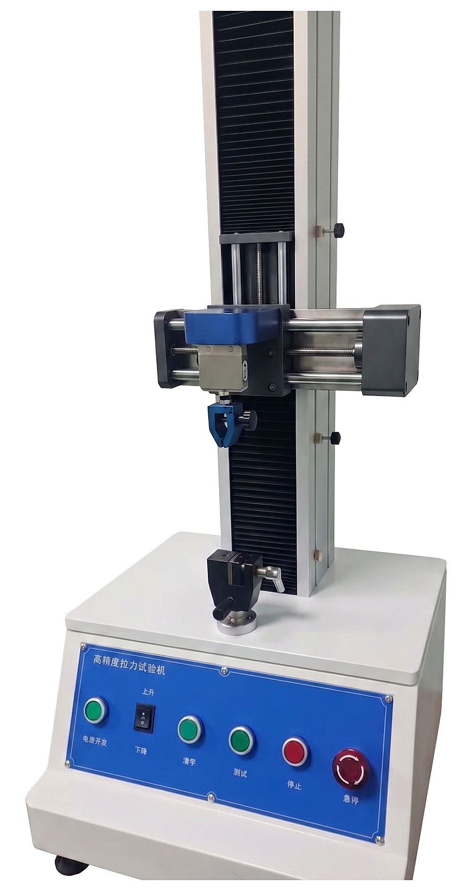

The tensile/adhesion tester uses TM2101 control software and can perform tensile, compression, bending, cutting, tearing and peel tests. The software collects, stores, processes and prints results, automatically calculating maximum force, average peel force and maximum deformation - used to verify the adhesion of labels, films, tapes and coatings before products leave the factory.
Do not put hands between the clamps or moving mechanism while the machine is powered on/running; wear safety glasses when the sample may break, fly off or spring back; the Stop/F4 button and emergency stop must always be functional and within reach.